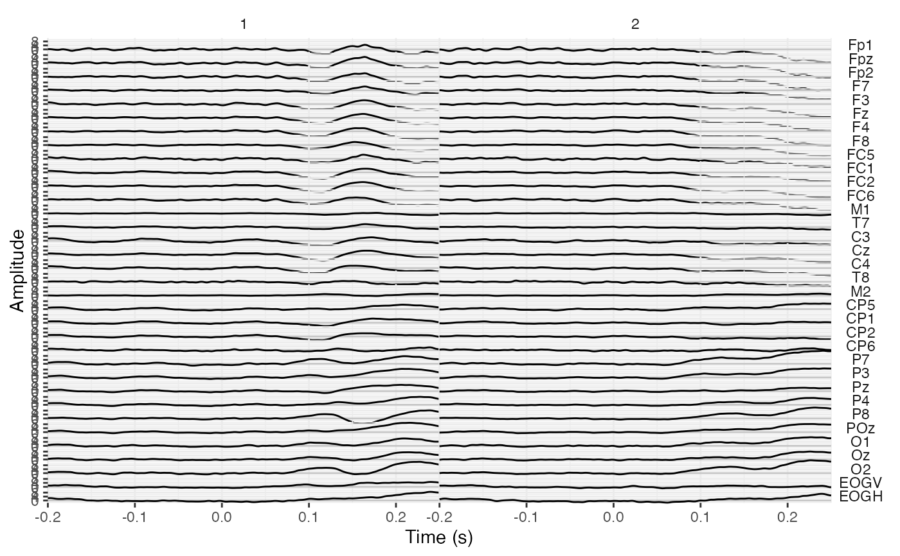
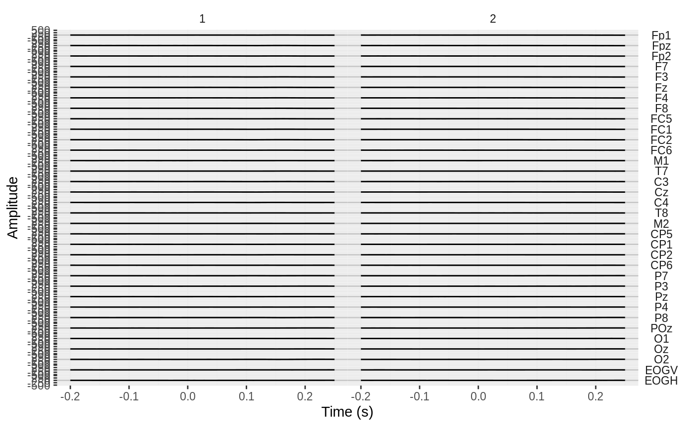

plot creates a ggplot object in which the EEG signal over the whole
recording is plotted by electrode. Useful as a quick visual check for major
noise issues in the recording.
# S3 method for eeg_lst plot(x, max_sample = 6400, ...)
| x | An |
|---|---|
| max_sample | Downsample to approximately 6400 samples by default. |
| ... | Not in use. |
A ggplot object
Note that for normal-size datasets, the plot may take some time to compile.
If necessary, plot will first downsample the eeg_lst object so that there is a
maximum of 6,400 samples. The eeg_lst object is then converted to a long-format
tibble via as_tibble. In this tibble, the .key variable is the
channel/component name and .value its respective amplitude. The sample
number (.sample in the eeg_lst object) is automatically converted to seconds
to create the variable time. By default, time is then plotted on the
x-axis and amplitude on the y-axis, and uses scales = "free"; see ggplot2::facet_grid().
To add additional components to the plot such as titles and annotations, simply
use the + symbol and add layers exactly as you would for ggplot2::ggplot.
Other plotting functions:
annotate_events(),
annotate_head(),
eeg_downsample(),
ggplot.eeg_lst(),
plot_components(),
plot_in_layout(),
plot_topo(),
theme_eeguana()
#>